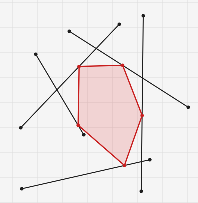
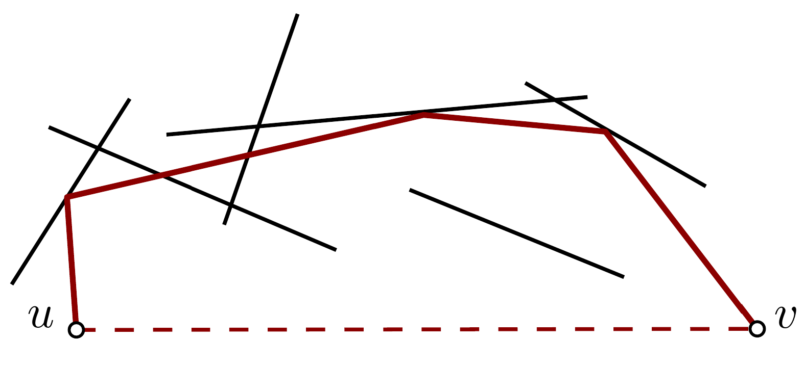

Introduction
The goal of this project is to understand and partially implement an algorithm to compute the smallest-perimeter intersecting
polygon for a set of segments in the plane.
This algorithm, which is an FPTAS, was presented in the paper ``Antonios Antoniadis, Mark de Berg, Sándor Kisfaludi-Bak,
and Antonis Skarlatos. Computing smallest convex intersecting polygons´´
(DOI : https://doi.org/10.20382/jocg.v16i1a6)
This paper also presents an approximation algorithm for the minimum-area intersecting polygon, but we made the choice to
focus only on the minimum-perimeter algorithm, as this algorithm is exact and looked interesting to focus on.
Illustration

Illustration

TPP problem reduction
The two subroutines in the paper reduce parts of our problem to the Touring Polygons Problem (TPP). Given a start point u, an end point v, and a list of convex polygons P1, ..., Pk, TPP asks for the shortest path from u to v that visits each polygon in that exact order. For general convex polygons, TPP takes O(nk2 log n) time, which drops to O(n3 log n) when the polygons are just half-planes.
To use this, we put the two anchor points u and v on the x-axis and turn each segment oi into a half-plane Hi. We then sort these half-planes clockwise according to their outward normal vectors, starting from (0, -1). Because the chain we are looking for is convex, any upper path from u to v that visits all Hi has to visit them in this sorted order (Lemma 22). Also, if the real optimal chain Γ does not touch any segment endpoints (except maybe u and v), it must be the exact same path as the TPP solution ΓH. Otherwise, mixing the two with λΓ + (1 - λ)ΓH would give an even shorter valid chain (Lemma 24). The only catch is that half-planes are infinite, so a TPP path might hit a half-plane without actually touching the original finite segment. We always have to check afterwards that all segments are really intersected.
Subroutine 1
Subroutine 1 deals with the case where Copt has no vertices in Y at all, so every corner of the polygon lies somewhere in the middle of a segment. If such a polygon exists, we can pick any of its vertices u as both the start and end point of a closed TPP loop.
This case turns out to be equivalent to the shortest watchman route problem. Using a known algorithm for watchman tours, we can find O(n3) candidate "event points", and at least one of them is guaranteed to be a vertex of Copt. For each candidate, we run the half-plane TPP solver in O(n3 log n) time. We then check in O(n2) time that the output is convex, hits every segment, and has no vertices in Y. Testing all O(n3) candidates gives a total time of O(n6 log n).
Illustration

Illustration

Subroutine 2
Subroutine 2 handles a more specific case: we are already given two fixed points u, v ∈ ℝ2 and a subset of segments O' ⊆ O. The goal is to find the minimum-perimeter intersecting polygon that has uv as one of its edges and no other vertices in Y.
Since u and v are fixed from the start, we do not need to test O(n3) starting points. We just run the half-plane TPP solver once from u to v on O', verify that the polygon actually intersects all segments in O', and make sure none of its intermediate vertices are in Y. This takes O(n3 log n) time.
Dynamic programming solution
If Copt has at least one vertex in Y, we use dynamic programming instead. We try every endpoint pbot ∈ Y as our starting vertex. First, an O(n log n) rotational sweep checks if pbot can actually be a vertex of a valid polygon, and we drop any segments that already contain pbot. Next, we fix a horizontal ray ρ0 pointing left outside Copt, guess the angle interval (ψj, ψj+1) where the tangent at pbot lies, and sort the remaining endpoints clockwise around pbot.
Here we run into a circular dependency: the shape of the convex chain Γvw between two consecutive endpoints v and w depends on which segments it needs to cover, which in turn depends on the slope of its last edge. To get around this, each DP table entry A[w, j] keeps track of an angular prefix set O(w, j) of segments intersected past w. When moving from an earlier endpoint v < w, we look at the remaining uncovered segments outside the triangle Δ(pbot, v, w) and call Subroutine 2 to find the shortest chain between v and w.
Complexity and results
To get the final polygon, the algorithm compares the result of Subroutine 1 (O(n6 log n)) with the best solution found across all dynamic programming runs, and keeps whichever has the smaller perimeter.
Overall, there are O(n2) DP instances (at most 2n choices for pbot and n choices for the tangent angle), and each table has O(n2) entries. Filling each entry takes O(n2) transitions, where each transition calls Subroutine 2 in O(n3 log n) time. Multiplying everything together gives a total runtime of O(n9 log n). Assuming P ≠ NP, this polynomial bound answers Question 1 from the paper by showing that the minimum-perimeter segment problem is not NP-hard.
Demonstration
The following demonstration contains the algorithms implemented during this project. It allows the user to draw a set of segments, then compute a minimum-perimeter intersecting polygon for this given set.